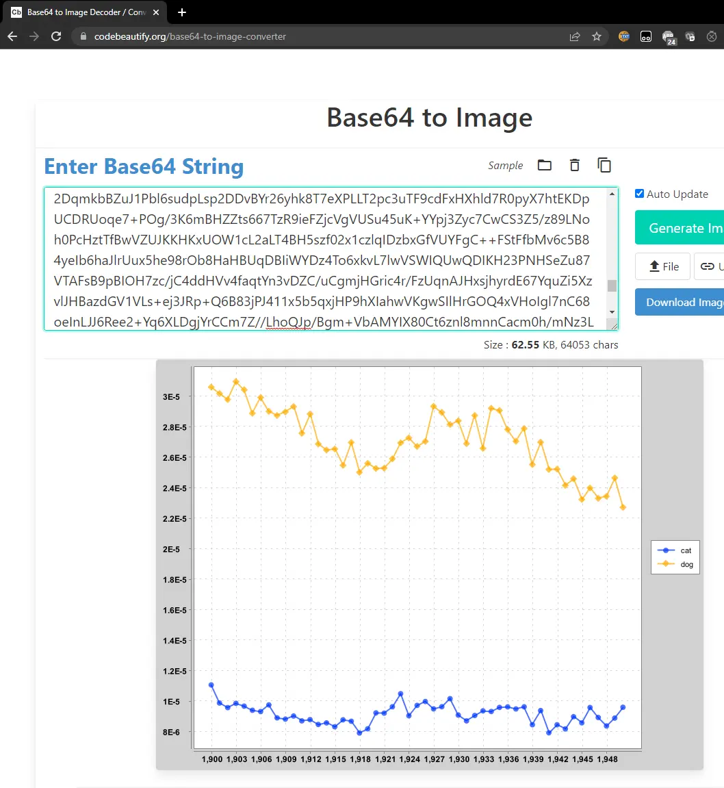
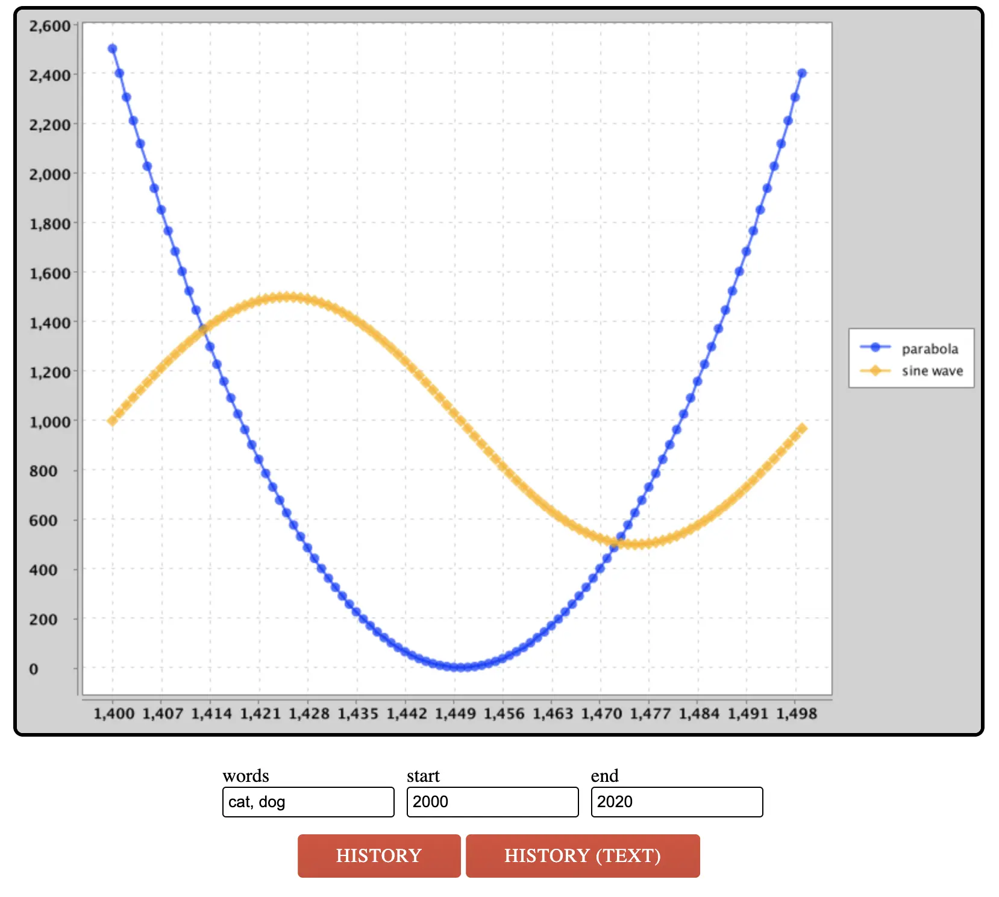

Project 4A: NGrams
Lectures needed for this project:
- Lecture 16 (Extends, Sets, Maps, and BSTs), or Chapter 16 of the textbook.
Partner policy: No partners, and the solutions you submit should be your own work! More details on the policies page.
LLM policy: LLMs should not write any of the code that you turn in. See this Lecture 1 slide and the collaboration policy for more details.
In this project, we will build a browser-based tool for exploring the history of word usage in English texts.
The Google Ngram dataset provides many terabytes of information about the historical frequencies of all observed words and phrases in English (or more precisely, all observed ngrams). Google provides the Google Ngram Viewer on the web, allowing users to visualize the relative historical popularity of words and phrases. For example, the link above plots the weighted popularity history of the phrases “global warming” (a 2gram) and “to the moon” (a 3gram).
In Project 4A, you will be build a version of this tool that only handles 1grams. In other words, you’ll only be able to handle individual words. We’ll only use a small subset (around 150 MB) of the full 1grams dataset, as larger datasets will require more sophisticated techniques that are out of scope for this class.
We have provided the front end code (in Javascript and HTML) that collects user inputs and displays outputs. Your Java code will be the back end for this tool, accepting input and generating appropriate output for display.
To support this tool, you will write a series of Java packages that will allow for data analysis. Along the way we’ll get lots of experience with different useful data structures. The early part of the project (Project 4A) will start by telling you exactly what functions to write and classes to create. The later part (Project 4C, 4D) will be more open to your own design.
See below or click here for a video introduction to the project. Note that the videos might have some slightly outdated sections.
To see what the fully-finished project looks like, check out the staff implementation at ngordnet.datastructur.es.
Setup
Follow the Assignment Workflow Guide to get started with this assignment. This starter code is in the proj4a folder.
You’ll also need to download the Project 4 data files (they are around 150 MB, which is too large to be pushed to GitHub).
Download the data files at this link.
You should unzip this file into the proj4 directory such that the
datafolder is at the same level as thesrcandstaticfolders.
Once you are done with this step, your proj4a directory should look like this:
proj4a
├── data
├── src
├── static
├── tests
Note that we’ve set up a hidden .gitignore file in your repository, so that Git will avoid uploading these large data files. If you ever run into a “Large files detected” error with Git, see this Git WTFS section.
If you need to work on multiple machines, you should download the zip file once for each machine.
See below or click here for a video demo of the setup process. Note that some files/filenames may be slightly different.
Task 1: TimeSeries
A TimeSeries is a special purpose extension of the existing TreeMap class, where:
- The key type parameter is always
Integer, representing a year. - The value type parameter is always
Double, representing a numerical data point for that year.
The TimeSeries class provides some additional utility methods to the TreeMap class, which it extends. See the TreeMap API to see which methods are available to you.
For example, the following code would create a TimeSeries and associate the year 1992 with the value 3.6 and 1993 with 9.2.
TimeSeries ts = new TimeSeries();
ts.put(1992, 3.6);
ts.put(1993, 9.2);
Implement the methods in
src/main/TimeSeries.javaaccording to the API provided in the file.For an example of how
TimeSeriesobjects are used, check out thetestFromSpec()test intests/TimeSeriesTest.java.
You may not add additional public methods to this class. You’re welcome to add additional private methods.
Tips:
TimeSeriesobjects should have no instance variables. ATimeSeriesis-aTreeMap. That means yourTimeSeriesclass also has access to all methods that a TreeMap has; see the TreeMap API.- You’ll notice in
testFromSpec()that we did not directly compareexpectedTotalwithtotalPopulation.data(). This is because doubles are prone to rounding errors, especially after division operations (for reasons that you will learn in 61C). Thus,assertThat(x).isEqualTo(y)may unexpectedly return false whenxandyare doubles. Instead, you should useassertThat(x).isWithin(1E-10).of(y), which returns true as long asxandyare within $10^{-10}$ of each other. - We did not provide a test for the
dividedBymethod. Feel free to add your own tests. - Several methods require that you compare the data of two
TimeSeries. You should not have any code which fills in a zero if a year or value is unavailable. - You may assume that the
dividedByoperation never divides by zero.
Task 2: NGramMap
The NGramMap class will provide various convenient methods for interacting with Google’s NGrams dataset. This task is more open-ended and challenging than the creation of the TimeSeries class. As with TimeSeries, you’ll be filling in the methods of an existing NGramMap.java file.
There is a lot to think about for this part of the project. We’re trying to mimic the situation in the real world where you have some big open-ended problem and have to figure out the approach from scratch. This can be intimidating! It will likely take some time and a lot of experimentation to figure out how to proceed. To help keep things from being too difficult, we’ve at least provided a list of methods to implement. Keep in mind that in the real world (and in later projects in this class), even the list of methods will be your choice.
Reading Input Files
The NGram dataset comes in two different file types. The first type is a “word history file”. Each line of a word history file provides tab separated information about the history of a particular word in English during a given year.
airport 2007 175702 32788
airport 2008 173294 31271
request 2005 646179 81592
request 2006 677820 86967
request 2007 697645 92342
request 2008 795265 125775
wandered 2005 83769 32682
wandered 2006 87688 34647
wandered 2007 108634 40101
wandered 2008 171015 64395
On each row:
- The first column is the word.
- The second column is the year.
- The third column is the number of times that the word appeared in any book that year.
- You can ignore the fourth column. (If you’re curious, it is the number of distinct sources that contain that word.)
For example, from the text file above, we can observe that the word “wandered” appeared 171,015 times during the year 2008, and these appearances were spread across 64,395 distinct texts.
The other type of file is a “year history file”. Each line of a year history file provides comma separated information about the total corpus of data available for each calendar year.
1470,984,10,1
1472,117652,902,2
1475,328918,1162,1
1476,20502,186,2
1477,376341,2479,2
On each row:
- The first column is the year.
- The second column is the total number of words recorded from all texts that year.
- You can ignore the third column. (If you’re curious, it is the total number of pages of text from that year.)
- You can ignore the fourth column. (If you’re curious, it is the total number of distinct sources from that year.)
For example, we see that Google has exactly 1 English language text from the year 1470, and that it contains 984 words and 10 pages. For our project, the 10 and the 1 are irrelevant.
You may wonder why one file is tab separated and the other is comma separated. I didn’t do it, Google did. Luckily, this difference won’t be too hard to handle.
Fill out the constructor of the
NGramMap.You’ll need to parse through the provided data files and store this data in data structure(s) of your choice.
Tips:
- Choosing the right data structure(s) is important, since picking the right data structure(s) can make your life a lot easier when implementing the rest of the methods. Thus, we recommend taking a look at the rest of the methods first to help you decide what data structure might be best; then, begin implementing the constructor.
- Avoid using a HashMap or TreeMap as an actual type argument for your maps. This is usually a sign that what you actually want is a custom defined type. In other words, if your instance variables include a nested mapping that looks like
HashMap<blah, HashMap<blah, blah>>, then aTimeSeriesor some other class you come up with might be useful to keep in mind instead. - We have not taught you how to read files in Java. We recommend using the
Inclass. The officialIndocumentation can be found here. However, you’re welcome to use whatever technique you’d like that you learn about online. We provide an example classsrc/demo/FileReadDemo.javathat gives examples of how to useIn. - If you use
In, don’t usereadAllLinesorreadAllStrings. These methods are slow. Instead, read inputs one chunk at a time. Seesrc/demo/FileReadDemo.javafor an example.
NGramMap Methods
Your constructor parsed the data files, and stored the data in some data structures. Now, the methods in NGramMap can compute interesting results from that data. For example, consider these data files (only relevant rows/columns shown):
word_history_size3.csv:
-----------------------------
Word Year Frequency
airport 2007 175702
airport 2008 173294
wandered 2005 83769
wandered 2006 87688
wandered 2007 108634
wandered 2008 171015
...
year_history.csv:
-----------------------------
Year Total number of words
2005, 26609986084
2006, 27695491774
2007, 28307904288
2008, 28752030034
...
| Method | Description | Example |
|---|---|---|
countHistory |
Takes in a word. For each year, return the frequency of the word in that year. |
countHistory("wandered", 2006, 2007)should return {2006: 87688, 2007: 108634}.
|
totalCountHistory |
For each year, return the total number of words in that year. |
totalCountHistory() should return{2005: 26609986084, 2006: 27695491774, ...}.
|
weightHistory |
Takes in a word. For each year, return the frequency of the word in that year, divided by the total number of words in that year. |
weightHistory("wandered", 2006, 2007)should return {2006: 87688 / 27695491774,.
|
summedWeightHistory |
Takes in multiple words. For each year, return the summed frequency of all the input words in that year, divided by the total number of words in that year. |
summedWeightHistory(["wandered", "airport"], 2006, 2007)should return {2006: (87688 + 0) / 27695491774,.
|
For all methods, if start and end years are provided, limit the returned output to only the years in the provided range.
You can assume all data is between the years 1400 and 2100. These variables are stored as constants MIN_YEAR and MAX_YEAR in the TimeSeries class.
If you call a method that returns a TimeSeries, and there is no available data for the given method call, you should return an empty TimeSeries.
- Example:
ngm.weightHistory("asdfasdf")should return aTimeSerieswith nothing in it, since"asdfasdf"is not a word in the dataset. - Example:
ngm.countHistory("adopt", 1400, 1410)should also return aTimeSerieswith nothing in it, since"adopt"has no data during those years.
Implement the methods in
src/main/NGramMap.javaaccording to the API provided in the file.For an example of an
NGramMapat work, check out thetestOnLargeFile()test intests/NGramMapTest.java.
NGramMap should not extend any class.
You may not add additional public methods to this class. You’re welcome to add additional private methods.
Tips:
- Your methods should be simple! If you pick the right data structures, the methods should be relatively short.
- The provided tests are not comprehensive. You will need to write additional tests. Rather than using one of the large input files (e.g.
word_history_size14377.csv), we recommend starting with one of the smaller input files (e.g.word_history_size3.csv,word_history_size4.csv). - Like in TimeSeries, you should not have any code which fills in a zero if a value is unavailable.
- Your code should be fast enough that you can create an
NGramMapusingword_history_size14377.csv. Loading should take less than 60 seconds (maybe a bit longer on an older computer).
Task 3: HistoryTextHandler
In this final part of Project 4A, we’ll do a bit of software engineering to set up a web server that can handle NgordnetQueries. While this content isn’t strictly related to data structures, it is incredibly important to be able to take projects and deploy them for real world use.
Note: You should only begin this part when you are fairly confident that TimeSeries and NGramMap are working properly.
-
In your web browser, open up the
ngordnet_4a.htmlfile in thestaticfolder. You can do this from your finder menu in your operating system, or by right-clicking on thengordnet_4a.htmlin IntelliJ, clicking “Open in”, then “Browser”. You can use whatever browser you want, though TAs will be most familiar with Chrome. You’ll see a web browser based interface that will ultimately (when you’re done with the project) allow a user to enter a list of words and display a visualization. -
Try entering “cat, dog” into the “words” box, then click
History (Text). You’ll see that nothing useful shows up.Optional: If you open the developer tools in your web browser (see Google for how to do this), you’ll see an error that looks like either “CONNECTION_REFUSED” or “INVALID_URL”. The problem is that the Javascript tries to access a server to generate the results, but there is no web server running that can handle the request to see the history of cat and dog.
-
Open the
main.Mainclass. This class’smainmethod first creates aNgordnetServerobject. The API for this class is as follows: First, we callstartUpon theNgordnetServerobject, then we “register” one or moreNgordnetQueryHandlerusing theregistercommand. The precise details here are beyond the scope of our class.The basic idea is that when you call
hns.register("historytext", new DummyHistoryTextHandler(ngm)), an object of typeDummyHistoryTextHandleris created that will handle any clicks to theHistory (Text)button. -
Try running the
main.Mainclass. In the terminal output in IntelliJ you should see the line:INFO org.eclipse.jetty.server.Server - Started..., which means the server started correctly.Now open the
ngordnet_4a.htmlfile again (or visit http://localhost:4567/ngordnet_4a.html). Enter “cat, dog” again, then clickHistory (Text). This time, you should see a message that says:You entered the following info into the browser: Words: [cat, dog] Start Year: 2000 End Year: 2020 -
Now open
main.DummyHistoryTextHandler, you’ll see ahandlemethod. This is called whenever the user clicks theHistory (Text)button. The expected behavior should instead be that when the user clicksHistory (Text)for the prompt above, the following text should be displayed:cat: {2000=1.71568475416827E-5, 2001=1.6120939684412677E-5, 2002=1.61742010630623E-5, 2003=1.703155141714967E-5, 2004=1.7418408946715716E-5, 2005=1.8042211615010028E-5, 2006=1.8126126955841936E-5, 2007=1.9411504094739293E-5, 2008=1.9999492186117545E-5, 2009=2.1599428349729816E-5, 2010=2.1712564894218663E-5, 2011=2.4857238078766228E-5, 2012=2.4198586699546612E-5, 2013=2.3131865569578688E-5, 2014=2.5344693375481996E-5, 2015=2.5237182007765998E-5, 2016=2.3157514119191215E-5, 2017=2.482102172595473E-5, 2018=2.3556758130732888E-5, 2019=2.4581322086049953E-5} dog: {2000=3.127517699525712E-5, 2001=2.99511426723737E-5, 2002=3.0283458650225453E-5, 2003=3.1470761877596034E-5, 2004=3.2890514515432536E-5, 2005=3.753038415155302E-5, 2006=3.74430614362125E-5, 2007=3.987077208249744E-5, 2008=4.267197824115907E-5, 2009=4.81026086549733E-5, 2010=5.30567576173992E-5, 2011=6.048536820577008E-5, 2012=5.179787485962082E-5, 2013=5.0225599367200654E-5, 2014=5.5575537540090384E-5, 2015=5.44261096781696E-5, 2016=4.805214145459557E-5, 2017=5.4171157785607686E-5, 2018=5.206751570646653E-5, 2019=5.5807040409297486E-5}To pass on the autograder, the formatting of the output must match exactly.
All lines of text, including the last line, should end in a new line character.
All whitespace and punctuation (commas, braces, colons) should follow the example above.
These numbers represent the weighted popularity histories of the words cat and dog in the given years. Due to rounding errors, your numbers may not be exactly the same as shown above.
Your format should be exactly as shown above, specifically:
- The word…
- …followed by a colon…
- …followed by a space…
- …followed by a string representation of the appropriate
TimeSerieswhere key-value pairs are given as a comma-separated list inside curly braces, with an equals sign between the key and values. Note that you don’t need to write any code to generate the string representation of eachTimeSeries, you can just use thetoString()method.
Now it’s time to implement the HistoryText button!
In the
mainfolder, create a new file calledHistoryTextHandler.javathat takes the givenNgordnetQueryand returns a String in the same format as above.Then, modify
Main.javaso that yourHistoryTextHandleris used when someone clicksHistory (Text). In other words, instead of registeringDummyHistoryTextHandler, you should register yourHistoryTextHandlerclass instead.
Tips:
- Use the
DummyHistoryTextHandler.javaas a guide, pattern matching where appropriate. Being able to tinker with example code and bend it to your will is an incredibly important real world skill. Experiment away, don’t be afraid to break something! - For Project 4A, you can ignore the
kinstance variable ofNgordnetQuery. - Use the
.toString()method built into theTimeSeriesclass that gets inherited fromTreeMap. - For your
HistoryTextHandlerto be able to do something useful, it’s going to need to be able to access the data stored in yourNGramMap. Do not make the NGramMap into a static variable! This is known as a “global variable” and is rarely the appropriate solution for any problem. Hint: YourHistoryTextHandlerclass can have a constructor like this:public HistoryTextHandler(NGramMap map). - If a word is invalid, think about how
NGramMapis handling this situation.
Task 4: HistoryHandler
The text-based history from the previous section is not useful for much other than auto-grading your work. Actually using our tool to discover interesting things will require visualization.
src/demo/PlotDemo.java provides example code that uses your NGramMap to generate a visual plot showing the weighted popularity history of the words cat and dog between 1900 and 1950. Try running it. If your NGramMap class is correct, you should see a very long string printed to your console that might look something like:
iVBORw0KGg...
This string is a base 64 encoding of an image file. To visualize it, go to codebeautify.org. Copy and paste this entire string into the website, and you should see a plot similar to the one shown below:

What’s going on here? The string your code printed IS THE IMAGE. Keep in mind that any data can be represented as a string of bits. This website knows how to decode this string into the corresponding image, using a predefined standard.
If you look at the plotting library, this code relies on the Plotter.generateTimeSeriesChart method, which takes two arguments. The first is a list of strings, and the second is a List<TimeSeries>. The TimeSeries are all plotted in a different color, and each is assigned the label given in the list of strings. Both lists must be of the same length (since the ith string is the label for the ith time series).
The Plotter.generateTimeSeriesChart method returns an object of type XYChart. This object can in turn either be converted into base-64 by the Plotter.encodeChartAsString method, or can be displayed to the screen directly by Plotter.displayChart.
Run Main.java again, and in your web browser, open up ngordnet_4a.html (or visit http://localhost:4567/ngordnet_4a.html). Enter “cat, dog” into the “words” box, then click “History”. You’ll see the strange image below:

You’ll note that the code is not plotting the history of cat and dog, but rather a parabola and a sinusoid. If you open DummyHistoryHandler, you’ll see why.
Seems like the parabola and sinusoid aren’t being scaled properly. Feel free to ignore that.
Update, Oct 10 2025, 4:00 PM: The DummyHistoryHandler demo plot of the parabola and sinusoid has been fixed! Please re-pull from the skeleton
git pull skeleton mainto see the new plot.
In the
mainfolder, create a new file calledHistoryHandler.javathat takes the givenNgordnetQueryand returns a String that contains a base-64 encoded image of the appropriate plot.Then, modify the
Main.javaso that yourHistoryHandleris called when someone clicks theHistorybutton.
Tips:
- The constructor for
HistoryHandlershould be of the following form:public HistoryHandler(NGramMap map). - Just like before, use
DummyHistoryHandler.javaas a guide. As mentioned in the previous section, we really want you to learn the skill of tinkering with complex library code to get the behavior you want.
Submission
Try submitting to the autograder. You may or may not pass everything.
- If you fail a correctness test, this means that there is a case that your local tests did not cover.
- The autograder will not run unless you fix all your style errors. Reminder that you can check style in IntelliJ as often as you’d like:

- You will have a token limit of 8 tokens every 24 hours. We will not reinstate tokens for failing to add/commit/push your code, run style, etc.
Project 4A will be worth 50 points.
Grading breakdown:
- TimeSeries (30%): Correctly implement
TimeSeries.java. - NGramMap Count (20%): Correctly implement
countHistory()andtotalCountHistory()inNGramMap.java. - NGramMap Weight (30%): Correctly implement
weightHistory()andsummedWeightHistory()inNGramMap.java. - HistoryTextHandler (10%): Correctly implement
HistoryTextHandler.java. - HistoryHandler (10%): Correctly implement
HistoryHandler.java.
The score you receive on Gradescope is your final score for this assignment (assuming you followed the collaboration policy).
The WordNet part of this assignment is loosely adapted from Alina Ene and Kevin Wayne’s Wordnet assignment at Princeton University.